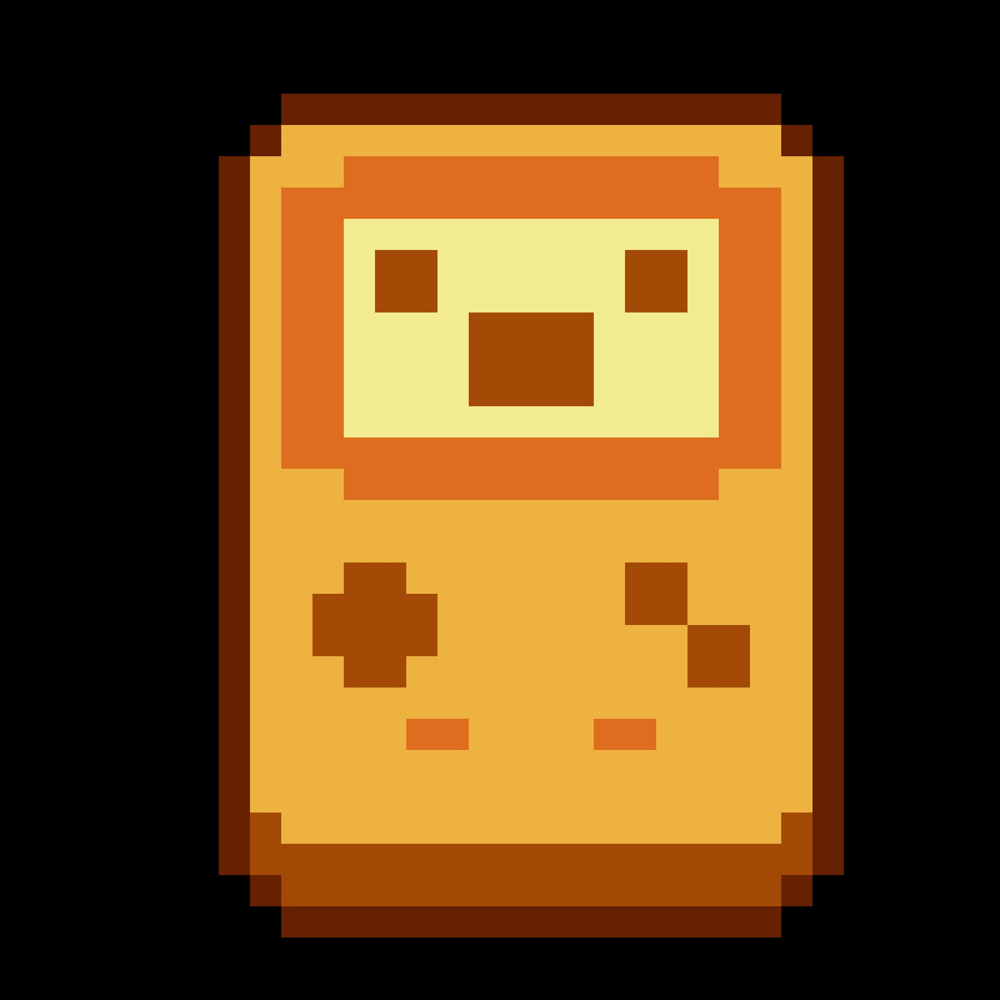

Conexão
Perfis profissionais, amizades e conversas aproximam pessoas com interesses semelhantes.
Quem somos
O BMO conecta estudantes, iniciantes, profissionais e empresas em um ambiente feito para descobrir desafios, mostrar habilidades e construir experiências reais em equipe.

Perfis profissionais, amizades e conversas aproximam pessoas com interesses semelhantes.
Empresas podem publicar desafios e freelancers podem transformar interesse em experiência.
Equipes, candidaturas e portfólios ajudam a desenvolver habilidades e reputação.
Como o BMO funciona
Apresente suas habilidades, área de atuação e objetivos para encontrar conexões alinhadas.
Explore desafios publicados por empresas e participe dos projetos que fazem sentido para você.
Converse, forme equipes e transforme colaboração em aprendizado e crescimento profissional.
Por que usar o BMO
Valoriza iniciantes e estudantes que estão construindo experiência e portfólio.
Crie equipes, convide membros e mantenha a conversa organizada pelo projeto.
Perfis, candidaturas, desafios e comunicação em uma mesma jornada conectada.
Próximo passo